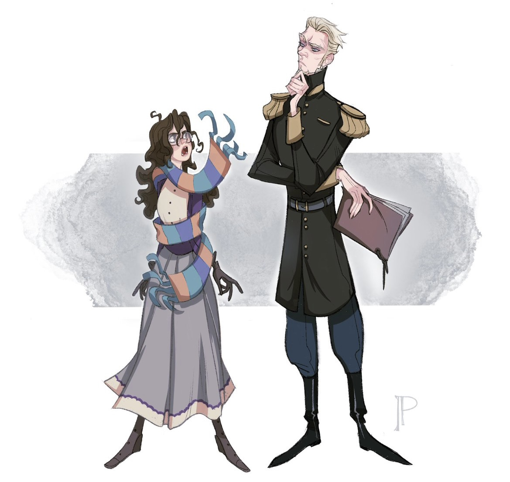

Link to the bottom
A guide to The Mirror Visitor Quartet by Christelle Dabos
A Winter's Promise - The Mirror Visitor - Book 1
The Missing of Clairdelune - The Mirror Visitor - Book 2
The Memory of Babel - The Mirror Visitor - Book 3
A Storm of Echoes - The Mirror Visitor - Book 4
‧͙⁺˚*･༓☾! Meet the main characters of A Winter's Promise☽༓･*˚⁺‧͙
Full name |
Height(ft) & Age(yrs) | Facts |
Yes or No? |
|
|---|---|---|---|---|
Ophelia |
5'2 |
19 - 20 |
Yes |
|
Thorn |
6'8 |
25 |
Yes |
|
Berenilde |
6'0 |
31 |
No |
|
Aunt Rosalind |
5'5 |
34 |
Yes |
|
Archibald |
6'6 |
27 |
Yes? |
|
Fox |
5'9 |
27 |
Yes |
|
Gale |
5'8 |
28 |
Yes |
|
Farouk |
10'0 |
above 100 |
No |
|
The Knight |
4'9 |
8-10 |
No |
Full name |
Height(ft) & Age(yrs) | Facts |
Yes or No? |
|
|---|---|---|---|---|
Ophelia |
5'2 |
19 - 20 |
Yes |
|
Thorn |
7'0 |
25 |
Yes |
|
Ambrose |
?he sits in a wheelchair |
31 |
Yes |
|
Octavio |
5'6 |
34 |
Yes 100% yes |
|
Elizabeth |
5'6 |
27 |
|
|
Mediana |
5'5 |
27 |
No |
|
Professor Wolf |
6'6 |
27 |
Yes and no |
|
Blaise |
5'9 |
27 |
Yes |
.・。.・゜✭・.・✫・゜・。.
Ophelia
Thorn
As previously mentioned, Thorn is the treasurer of The Pole-- an ark that is shrouded by mystery, politics and intrigues. He is part of the Dragon clan on his father’s side, and has the inherent ability to extend mental claws that can physically harm those near. Also is called a bastard on his ark because his mother’s clan had fallen from grace before he was born; but he gained an ability of perfect memory from her family. Thorn even clearly remembers the occasion his grandmother had strangled him as an infant.
Not only does his grandma, because frankly, everyone in The Pole harbors disdain toward Thorn. He is an unapproachable, lanky and Northern accented man that trusts no one, talks to no one (except his aunt.)His aunt, who had been on his side since he was young, never betrayed him like the rest of his father’s family.
He doesn’t relax, engage with the other residents for leisure and has absolutely no lenience for those he does business with-- who would deign to stick around a prick like him?
Despite being unwanted by society, Thorn has little concern about what others think of him. Yet in A Winter’s Promise this changes, and Thorn comes to care a lot surrounding the opinion of Ophelia. Though his initial impression of his fiance was a small, quiet girl who couldn’t possibly bear the customs and two-facedness of The Pole, he learns that behind the exterior Ophelia is opinionated and stubborn. The kind of person who will do anything she sets her mind to, a person who also holds no qualms about others opinions of her-- besides her sartorial choices that slightly concern his aunt. And the more he sees, interacts with Ophelia the more he feels. . . Uplifted. . . and even a little more than that..｡*ﾟ+.*.｡ﾟ+..｡*ﾟ+
“Are you coming back?” He said gruffly.
“Why?” She couldn’t stop herself from being on the defensive. In the mirror, she saw Thorn’s reflection frowning hard enough to distort his scars.
“Thanks to your ability to travel through mirrors you could keep me informed of the situation at Clairdelune. And,” he added more quietly, taking a sudden interest in his shoes,
“I think I’m starting to get used to you.”.｡*ﾟ+.*.｡ﾟ+..｡*ﾟ+
Berenilde